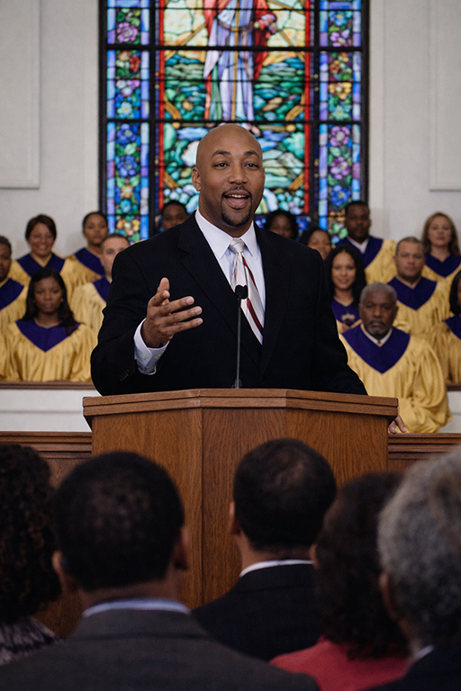

Our Statement of FAITH
We believe that all scripture is given by the inspiration of God.
2 Timothy 3:16 We believe that there is one body and one
Spirit; one Lord, one faith, one baptism, one God and Father of
all, who is above all, and through all, and in all.
We believe that all have sinned and come short of the glory of God and are in need of salvation. We maintain that faith in Christ Jesus' death, burial and resurrection is the only way, truth, and life. Upon confessing that God raised Jesus from the dead and asking Jesus to come inside your heart, the born again experience occurs.
We believe in water baptism in the name of THE FATHER, SON and HOLY GHOST for the remission of sins; We believe in the observance of the Lord's Supper & Holy Communion; We believe that the Holy Spirit expresses Himself through people; We further believe in the gifts as outlined in 1 Corinthians Chapter 12 and in Romans Chapter 12. We expect the expression and fulfillment of the same; We believe all the Scriptures are to be interpreted in their full context and purpose.
We believe the Great Commission was given by Christ and is binding on every believer to go into all the world and preach the gospel to every creature. We believe every doctrinal formation, whether of creed, confession or theology, must be tested by the full counsel of God as revealed in the Scriptures consisting of 66 books, from Genesis to Malachi in the Old Testament and from Matthew to Revelation in the New Testament.
Finally, We believe in the return of our soon coming King, Jesus Christ, and the resurrection of the dead in Christ and those who remain will be caught up to meet the Lord in the air. This is the second coming as described in I Thessalonians Chapter 4.
James & Michelle Kelly
"The less we say the more
God can say"
-Steve Wickham.
Our Mission
Jubilee Junction Christian Fellowship is an end time prophetic ministry appointed and anointed.
Undoubtedly you and I know people who are hurting and people who have been abused; all of these people are searching for answers and solutions to the vicissitudes of life. Many times wasting money and time, only to find themselves worse off.
Jubilee Junction Christian Fellowship has the answer. The answer is found in Jesus and Jesus alone. God has chosen JJCF to be the kind of Ministry equipped to deal with every hurt, pain and issue life could offer. Our aim and objective at JJCF is to provide the necessary spiritual and natural resources for every partner, friend and person within our community to become all God has ordained them to be. It becomes ever increasingly clear why God has called us Jubilee Junction Christian Fellowship.
God has ordained JJCF to be an example to the world as to how His church is to operate and function. JJCF is not bound or limited by the doctrines of man; we are not a democracy, but rather a theocracy.
Our Ministries
INTERCESSORY PRAYER: This is a ministry which was birthed out of an urgency of the Spirit of God. Intercessory Prayer is held each Sunday morning at 7:30 a.m
PROJECT HARVEST MINISTRY: God called all partners to this area of ministry. We as workers, together with Him, shall take the gospel to the streets, hospitals, prisons, and nursing homes.
CHILDREN'S MINISTRY: This Ministry captures the attention of age 3-12 years in a Method of teaching that captures the attention of this age group.
MEN AND WOMEN'S FELLOWSHIP: Respectively called Men of standards; and Women of Virtue; for men and females, ages twelve and above. During this time of fellowship, men and women are taught how to fulfill the role God has designed for them. Men of Standards and Women of Virtue meet bi-monthly or as noted in the bulletin.
MUSIC MINISTRY: The music ministry is composed of the orchestra, choirs (adult, youth and children) and praise teams who minister at all worship services including special services and fellowships.
LITURGICAL DANCE MINISTRY: Liturgical dance is the physical or outward expression of the inward relationship with the Lord. It is using technique, form and expression to communicate to others an experience with the Lord. God says we are to show forth the praises unto him in the dance Ps149:3 Dance is one way we can show forth the praises of our God.
